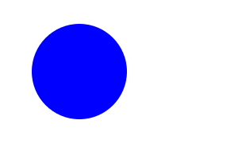

Gegl processes operations following a directed acyclic graph,
where every node-operations have to be connected until a destination
node, which have to be processed with gegl_node_process(),
to produce the expected result, from the node-chain created with
gegl_node_connect_to().
Here is a minimal example:
#include <gegl.h> int main(int argc, char **argv) { gegl_init(&argc, &argv); GeglNode *graph = gegl_node_new(); GeglNode *load = gegl_node_new_child(graph, "operation", "gegl:png-load", "path", "input.png", NULL); GeglNode *save = gegl_node_new_child(graph, "operation", "gegl:png-save", "path", "output.png", NULL); gegl_node_connect_to(load, "output", save, "input"); gegl_node_process(save); g_object_unref(graph); gegl_exit(); return 0; }
The output of the load node is connected with the input
of the save node.
You can compile this small example with:
$ gcc -o png-io.exe png-io.c `pkg-config --cflags --libs gegl-0.4` $ ./png-io.exe $ ls input.png output.png
This small example will load the input image input.png and
create an equivalent output image output.png.
Now here is how to apply a filter to the input image.
The node-chain now has to be: load -> blur -> save / process(save)
#include <gegl.h> int main(int argc, char **argv) { gegl_init(&argc, &argv); GeglNode *graph = gegl_node_new(); GeglNode *load = gegl_node_new_child(graph, "operation", "gegl:png-load", "path", "input.png", NULL); GeglNode *blur = gegl_node_new_child(graph, "operation", "gegl:gaussian-blur", "std-dev-x", 8.0, "std-dev-y", 8.0, NULL); GeglNode *save = gegl_node_new_child(graph, "operation", "gegl:png-save", "path", "output.png", NULL); gegl_node_connect_to(load, "output", blur, "input"); gegl_node_connect_to(blur, "output", save, "input"); gegl_node_process(save); g_object_unref(graph); gegl_exit(); return 0; }
Using several layers.
The compose node has a second input connector called "aux".
The "output" connector of the compose node is connected
to the "input" connector of the save node.
#include <gegl.h> int main(int argc, char **argv) { gegl_init(&argc, &argv); GeglNode *graph = gegl_node_new(); GeglNode *layer1 = gegl_node_new_child(graph, "operation", "gegl:svg-load", "path", "layer1.svg", NULL); GeglNode *layer2 = gegl_node_new_child(graph, "operation", "gegl:svg-load", "path", "layer2.svg", NULL); GeglNode *compose = gegl_node_new_child(graph, "operation", "gegl:multiply", NULL); GeglNode *save = gegl_node_new_child(graph, "operation", "gegl:png-save", "path", "output.png", NULL); gegl_node_connect_to(layer1, "output", compose, "input"); gegl_node_connect_to(layer2, "output", compose, "aux"); gegl_node_connect_to(compose, "output", save, "input"); gegl_node_process(save); g_object_unref(graph); gegl_exit(); return 0; }
Here are the input images, with the result of the composition:
| "layer1.svg" | "layer2.svg" | "output.png" |
|  |